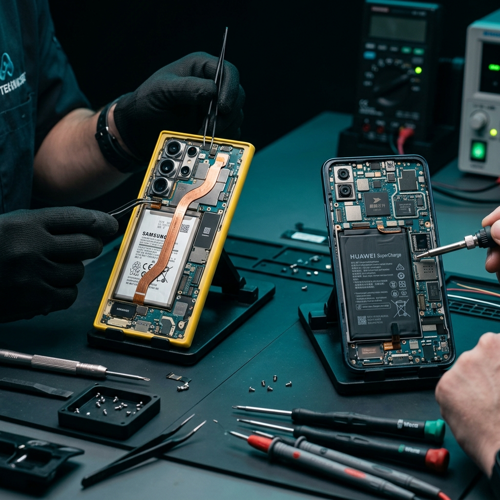

We repair every Android brand — Huawei, Xiaomi, Oppo, OnePlus, Tecno, Infinix, Nokia and more — at Shop 6, Madeira Isles, Danville. Same-day service. OEM-grade parts. 6-month warranty.

Cracked, black, or shattered display on any Android brand. LCD and AMOLED panels. Prices vary by model.
Draining fast, swollen, or won't charge? Same-day battery swap for all Android brands. From R400.
Board cleaning, corrosion removal, and component-level recovery after water or liquid damage.
USB-C or Micro-USB port damaged, loose, or corroded. Board-level or module replacement.
Blurry, cracked, or non-functional rear or front camera. Module replacement for all brands.
Dead phone, no power, boot loop. Micro-soldering and component repair where others give up.